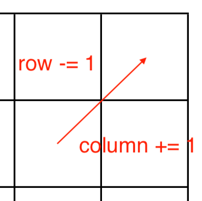

Stage 2 プログラムの土台を作る
2-2 基本的な定数を宣言する
2-1 でロガーをコーディングした config.py ファイルの残りの部分を片付けましょう。ここでは、コード全体に大きく関わるような各種定数を宣言していきます。
まずはコーディングする部分のコードを見ていただきましょうか。
logger = setLogger(__name__)
# board is 8 * 8
SIZE = 8
if int(SIZE / 2) != SIZE / 2:
logger.error('SIZE VALUE HAS TO BE EVEN')
print('SYSTEM ERROR')
sys.exit()
# rows & columns index
ROW = 0
COL = 1
# piece values
EMPTY = 0
B = BLACK = 1
W = WHITE = -1
# game proceeding/set
GAME_PRC = 0
GAME_SET = 1
# for return
SUCCEEDED = True
FAILED = False
# direction is represented as follows: [toROW - frROW, toCOL - frCOL]
WHOLE_DIRECTION = [
[-1, -1], [-1, 0], [-1, 1],
[0, -1], [0, 1],
[1, -1], [1, 0], [1, 1]
]
# whether the index is in the board
def InBoard(subject):
if 0 <= subject < SIZE:
return True
else:
return False

おいおい待て待て、なんか地味になげーぞ
やってることはただただ定数を代入しているだけです。何ら難しいこともありません。お気楽にご覧になってくださって結構です。
~~~~~~~~~~~~~~~
まず最初に、2-1 で拵えたばかりの setLogger 関数を使ってこの config モジュール（ファイル）内で主に扱うロガーを宣言します。
logger = setLogger(__name__)
引数に __name__ とあるのはモジュール名 'config' をそのままこのロガーの名前にするためですね。
下に行って盤面の大きさを決めています。
# board is 8 * 8
SIZE = 8
if int(SIZE / 2) != SIZE / 2:
logger.error('SIZE VALUE HAS TO BE EVEN')
print('SYSTEM ERROR')
sys.exit()
盤面が SIZE * SIZE つまり 8 * 8 の 64 マスであることがコーディングされています。
その下に if 文が続いていますよね。ここでは上記の SIZE が適正な値かを判断しています。というのも、SIZE が偶数でないと最初に 4 つ石を中央に並べるあの形が作れないんですよね。
具体的にはどう判断しているかというと、int(SIZE / 2) と SIZE / 2 の値を比べています。
# board is 8 * 8
SIZE = 8
if int(SIZE / 2) != SIZE / 2:
logger.error('SIZE VALUE HAS TO BE EVEN')
print('SYSTEM ERROR')
sys.exit()
もし SIZE が奇数であれば、SIZE / 2 は必ず 5.5 とか 3.5 と言った具合に整数になりません。したがって、int で整数にしてあげれば正しい値をとっているかわかるわけです。
じゃあわざわざ変な式にしなくても SIZE % 2 == 0 で判断すればいいじゃん
ええ、整数であればね。もし SIZE に 6.7 みたいな小数入れられたらどうするんですか？
いや...まあそんなことありえんし...
その通りですね。コードの SIZE をわざわざ変えられることを心配するのは杞憂ですね。ただコードを書いてしまった以上は杞憂を貫き通します。
なんじゃそりゃ、変なの
もし if の条件に適合して SIZE が適正な値ではないと判断された場合、先ほど用意したロガーで警告を出します。
if int(SIZE / 2) != SIZE / 2:
logger.error('SIZE VALUE HAS TO BE EVEN')
print('SYSTEM ERROR')
sys.exit()
またユーザーには「システムエラーが発生した」とだけ伝えて、sys.exit で強制終了させます。
~~~~~~~~~~~~~~~
お次はリストのインデックスに名前をつけていきます。
このコードでは [row, col] の形で表されるリストがちょくちょく出てきます。例として A = [row, col] というリストを考えてみると、
A[0] += 1
とかされたら

これ row の値だっけ？column だっけ？
と頭を抱えることになってしまいかねません。
それで row と column のどっちのインデックスかわかりやすいように名前をつけるってわけね
その通りでございます。
# rows & columns index
ROW = 0
COL = 1
順番はどちらでも構いませんが、このコードでは ROW を 0, COL を 1 としておきます。
実際どうやって使うん？
そんなに難しいことはなくて、例えば先ほどの例で言えば A[ROW] += 1 みたいにします。
~~~~~~~~~~~~~~~
1-2 で board に石を入れておこうという話になりましたが、その値にも名前をつけてあげましょう。
# piece values
EMPTY = 0
B = BLACK = 1
W = WHITE = -1
またこの値はプレーヤーを判断するのにも使います。
どういうこと？
例えば「プレーヤーが黒の時」みたいに場合わけしたければ
if player == BLACK:
のような形でコーディングするということです。
~~~~~~~~~~~~~~~
ゲームが進行途中かゲームセットしているかもコーディングしておきます。
# game proceeding/set
GAME_PRC = 0
GAME_SET = 1
ゲームセットしたらすぐプログラム終了すりゃええねん
いらんやろこんなもん
いえいえ、勝敗を判定するときに実は使えるんですよ。その真価を発揮するのは Stage 7 になりますかね。それまでどうぞお楽しみに。
~~~~~~~~~~~~~~~
メソッドの返り値にも名前をつけてあげます。
# for return
SUCCEEDED = True
FAILED = False
普通に True と False でええやん
いらんよこんなん
例えば石を裏返してくれる turn メソッドというのがあったとします。もし石が裏返せなかったとしたら、そのときこのメソッドの返り値はどうなりそうですか？
False かな？いや、Null かもしれん
そんな具合に返り値がなんだったか思い出す手間が出てきますし、何しろ間違った時のバグを考えたら恐ろしくてしょうがない。
ということで「失敗」となるようなときには FAILED をリターンし、「成功」となったら SUCCEEDED をリターンしてもらえるよう統一しようという魂胆です。
~~~~~~~~~~~~~~~
上下左右斜めの方向も決めていきたいのですが、各方向に名前をつけたところで今回方向ごとに分ける場面がないので、「全方向をまとめたリスト」を用意します。
# direction is represented as follows: [toROW - frROW, toCOL - frCOL]
WHOLE_DIRECTION = [
[-1, -1], [-1, 0], [-1, 1],
[0, -1], [0, 1],
[1, -1], [1, 0], [1, 1]
]
for 文なんかで「全部の方向を見たい」となったときに
for direction in WHOLE_DIRECTION
とするような使い方をします。
でも 1 とか -1 とか、そんなんでどうやって方向を表すん？
では早速先ほど宣言したばかりのインデックスの名前を使ってご説明しましょう。
例えば [row, col] という位置に注目しているとして、ここから斜め右上に進みたいとなったら、row は 1 引いて column は 1 足せばいいですよね？
そこで右上を表すリストを direction = [-1, +1] とすれば、
row += direction[ROW]
col += direction[COL]
とすることで右上に移動することができます。
これを上下左右と斜め全部で 8 方向に拡張すると、コードにあるリストの通りになりますから、全部まとめて WHOLE_DIRECTION としています。
~~~~~~~~~~~~~~~
最後に定数の宣言ではありませんが、row や column に使う値が適正値になっているか判断する関数を実装しておきます。
# whether the index is in the board
def InBoard(subject):
if 0 <= subject < SIZE:
return True
else:
return False
例えば SIZE が 8 なのに row == 10 とかされたらエラー出て大変ですよね。ということで 0 以上 SIZE 未満の値であれば True を、それ以外で False をリターンします。
SIZE ってこんなか入っていないよね？なんで？？
主にリストのインデックスに使うために実装しているからです。例えば board[SIZE] ってやったらエラー出るでしょ？